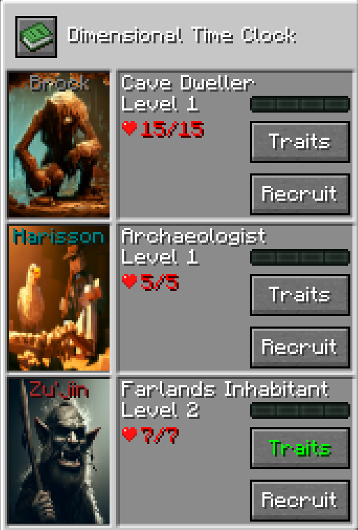

Welcome to the Time Mercenaries Wiki!
What is Time Mercenaries?
Time Mercenaries is a mod centered around the Dimensional Time Clock. This item allows you to communicate with and manage a team of unique mercenaries.
Your job is to send them on missions, and watch as they level up, becoming more powerful and unlocking new, more challenging (and rewarding) quests.
This mod adds very few items and is mostly GUI based for now, it's main purpose is to give an alternate way of obtaining some Minecraft items.
Key Features
- Mercenaries: 14 different Mercenaries with each their own missions and item pool.
- Mission Rarity System: As you level up your mercenaries, they will unlock missions of new rarities which offer greater and new rewards.
- Global Progression: Your progression is saved globally, this means that if you lose your Dimensional Time Clock, you can craft another one and get right back where you were.
- Modular Upgrades: Enhance your Dimensional Time Clock with a wide array of modules, unlocking new mechanics, quality-of-life features, and even new mercenaries.
- JEI/EMI Integration: Each item that can be obtained with a Mission will be shown in it's own GUI, you will see which Mercenary you need to recruit and the Mission Rarity needed.
Getting Started
Ready to recruit your first Mercenary? Your first step is to craft the Dimensional Time Clock. Once you have it, simply use the item (Right-Click, or use its keybind) to open the main interface and meet your first three potential recruits.

Once you first use the Dimensional Time Clock, you will be greeted with the Recruiting menu. On there you will see 3 randomly selected mercenaries ready to be recruited, but you will be able to choose one of them only.
You will then be able to choose between 3 Missions. Each of them will reward different items and will also require you to give some to start. The required items will be deleted from your inventory when you start the mission.

You will then have to wait for the mission to end to see if your Mercenary was successfull or not. At first, the time a mission take is hidden but the Common missions usually take only a few minutes.
Also you will be able to see your Dimensional Time Clock item texture update in real time !
Important note ! The timer goes down only if you have the Dimensional Time Clock item on yourself !

When the timer is up, you can finish the Mission, on success a portal will spawn in front of you and the items will then be projected towards you on the ground. So be carefull where you complete your missions !

Upon leveling up, your mercenaries "Trait" button will change color. This will indicate that you can level up one of it's trait to strengthen him for his future missions !
There are also global upgrades that you can do with "Modules". You can hover over each one to see what they will unlock !
Failed missions will sometimes inflict damage to your mercenary, and if they take too much damage they will die and will lose a level. You will be able to resurrect them by paying with some of your Experience Levels.

Mercenaries have a Hunger mechanic. Each mission cost some Hunger to achieve, but even if a Mercenary is low on Hunger you will still be able to send him on a mission. When a mercenary is too hungry, he will take damage on missions. Hunger is refilling slowly over time and after each mission.
Mod Content
Possible Rewards
Legendary Artifacts
The Arena
The Arena is a special dimension where the strongest fighters from across the realms gather to test their might. Speak with Lene, the Arena's overseer, to begin your trial.
You can challenge powerful champions in single combat or place bets on battles between two teams of creatures to earn coins.
This dimension is still heavy WIP and not yet accessible.
Lore
Lore will be a important part of this mod, it will evolve as the mod gets updated, for now it is heavily WIP.
Download
First Step
This mod is only available for the 1.20.1 version of Minecraft using either Neoforge or Forge modloader. You must first download the file using Curseforge or Modrinth.
Then you simply have to put the downloaded .jar file in your Minecraft "mods" folder and that's it !
This mod has no dependency and does not require any additional files to work. If you are playing on a server, this mod is required in both the Client and the Server files.
Changelog
Version 0.14.0
- Added a new Mercenary : Aella the Wildshaper
Version 0.13.1
- Added Hestra artefact items
- Rebalanced Hestra mission fail chances and damages
Version 0.13.0
- Added a new Mercenary : Hestra the Heat-Forge
- Added Mercenaries voicelines transcripts
- Added a client config to mute all sounds from the mod (Default false)
- Added a client config to play mercenary voicelines (Default true)
- Added a client config to transcript mercenary voicelines (Default false)
- Added missing voicelines to some mercenaries
- Fix Vael sometimes being stuck in a permanent skipped state
Version 0.12.4
- Added EMI compatibility
- Void-Woven Greaves, Constellar Staff and the Primal Hunting Spear can now be enchanted
- Updated Legendary Mercenary items text
Version 0.12.3
- Fixed Missions not being able to start on server
- Fixed Missions rewards tooltip not correcly aligned
- Fixed Portal being able to spawn behind blocks
Version 0.12.2
- Fixed EXP-All Module and Heroic Difficulty Module not being unlockable
- Fixed Chaos bribe item not being correctly registered
- Fixed Vael not skipping correctly when Dual Boot Module is installed
- Fixel Vael Quest being available from the game guide
- Added an administrator command to activate Admin Debug Mode
Version 0.12.1
- Fixed Singleplayer crash
Version 0.12.0
!!! UPDATING WILL CANCEL CURRENTLY SENT MERCENARY
- Added Hunger mechanic
- Added new artefacts for mercenaries obtainable in Legendary Missions
- Added Statistics for each Mercenary
- Added Portal animation for sending mission and getting rewards
- Curios Compatibility
- Added background texture animations to waiting screen
- Added Client Configs .toml file and ingame config screen
- Added Server Configs .toml file
- Added Lore Progression
- Bribe item now cycles
- Added mercenary voices
Version 0.11.0
!!! UPDATING WILL CANCEL CURRENTLY SENT MERCENARY
- New BIG UPDATE !
- Added new modules !
- Added new mercenaries
- Added new advancements
- Added a new trait
- Reworked module item costs
- Lots of technical changes for better compatibility and stability.
- Stored data now uses Capabilities
- Missions are now stored in JSON format and can be configured.
Version 0.10.1
- Fixed a crash on some failed missions
Version 0.10.0
!!! UPDATING WILL CANCEL CURRENTLY SENT MERCENARY
- Added ingame Guide in the Dimensional Clock Item
- Added new system: Modules. Modules are upgrades tied to the Dimensional Time Clock which permanently unlocks perks. There are a lot of them and you can read about each one in the ingame Guide.
- Added a new mercenary: Pirddiv the Dune Worm
- Added a waiting screen to see the mercenaries progress on his mission
- Added health points system to Mercenaries.
- Added new advancements
- Replaced the Death trait with the Sturdiness trait
- Modified the death system. There is no more a chance to die in addition to the fail chance. Now when a mission is failed, mercenaries can suffer some damage and lose health.
- Mercenary death does not reset level and traits anymore. They now lose a single level on death and must be resurrected
- To resurrect a Mercenary, you must pay levels equal to 10 + MercenaryLevel. They will revive with 25% of their maximum health.
- Modified custom GUI layout a bit
- Fixed rewards items count sometimes not right
- Fix random missions success items tooltip in end screen
- Fix potential lock on failed random mission
- Fixed problems with LAN mode not working correctly.
Version 0.9.0
- Added a new Mercenary: Orion the Enchanter
- Added a new Mercenary: Grizzle the Potion Master
- Localised item names in mission tooltip
- Fix Advancement Name
- Fix Bribe item count in end mission screen
- Fixed some item name in tooltips
Version 0.8.2
- Changed color of Trait button to indicate a trait is available
- GUI can now be closed using the mod keybind or the vanilla inventory keybind
Version 0.8.1
- Fixed Mercenary Level starting at 0
- Fixed mission item icons
Version 0.8.0
- Added JEI Integration
Version 0.7.0
- Added Advancements
Version 0.6.0
- Added Bribing mechanic: Each Mercenary can be bribed with a custom item to ensure he will be present in the next recruitment.
- Added possibility to give the Mercenary a Totem of Undying to prevent the next death he would have in a mission.
- Added possibility to reset the Mercenary Traits and reallocate them. (Removes all randomly gained traits too but cannot reallocate those)
Version 0.5.0
- Added new trait: Scavenger
- Scavenger adds a chance to permanently upgrade a random trait after a successful mission
Version 0.4.0
- Changed clock texture
- Added dynamic clock texture changing with mission progress
- Fixed exp bar display bug in recruit screen
Version 0.3.1
- Fixed Keybind
Version 0.3.0
- Added keybind to open Dimensional Time Clock menu (works even if clock is in inventory and not in hand)
- Added some "rewards" for some failed missions
- Added description to failed/deadly missions end screen
- Added icon to show when Greedy Trait triggered
- Fix Greedy Trait cannot be leveled
Version 0.2.0
- Added sound when timer ends for a mission.
- Added Traits, they are upgrades for your mercenaries after they level up.
- Reduced skip time from 300 to 150 seconds.
Mods Compatibility
Just Enough Items (JEI) Integration
Any item obtainable in a mission will be shown. You will see the necessary Mercenary and Mission Rarity needed to obtain the item.
EMI Integration
Same as for the JEI integration, every item obtainable in a mission will be shown and also have the recipe tree.
Curios Compatibility
The Dimensional Time Clock item can be put in any generic "Charm" Curios slot. The item will continue to tick like if it was in inventory.
To open the GUI with the item equipped as a Curio you must use the keybind. ('V' by default) Some powerful artefacts obtained from legendary missions can also be equipped as curios.What's Next ?
Currently Being Developped
- Lore Progression
- Custom Questing Dimension
- More Endgame Modules
- Other Mod Integration (New Mercenaries)
Future Ideas
- Backport to older versions : 1.12.2 and 1.16.5
- Port to newer versions : 1.21.7
- Fabric port
- More Multiplayer features
- Better UI textures
- Summoning Mercenaries to help in combat
- Some other ideas that I won't spoil yet...
About Me
Hello, I am Sluggly !
I am a 27 years old french PHD Student in Computer Science. I love Minecraft and coding things, so I made a Minecraft mod.
I love to play large Minecraft modpacks and I wanted to add my own mod in there, this was initially developped for my own gameplay with features I like.
Feel free to contact me on Discord for anything : sluggly